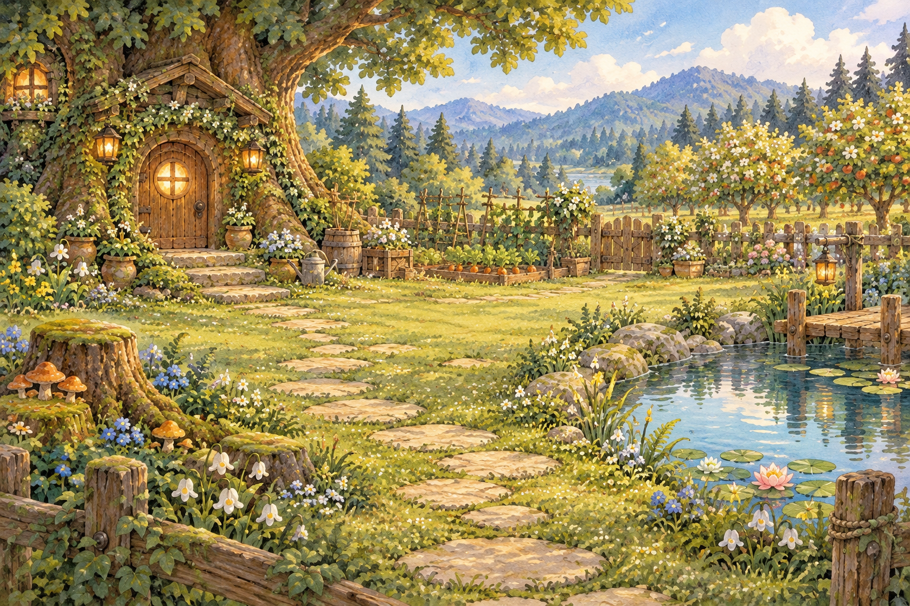
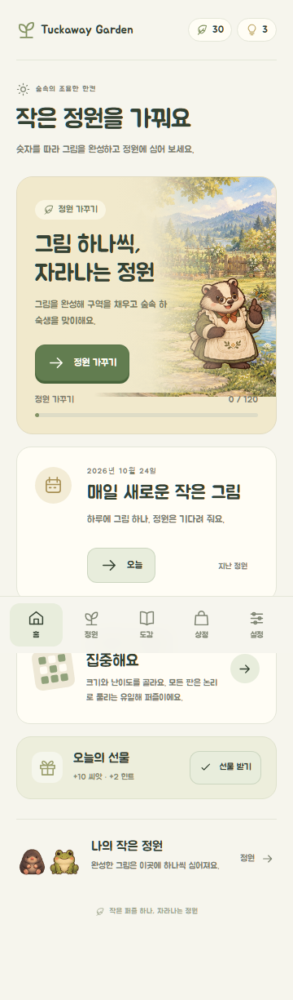
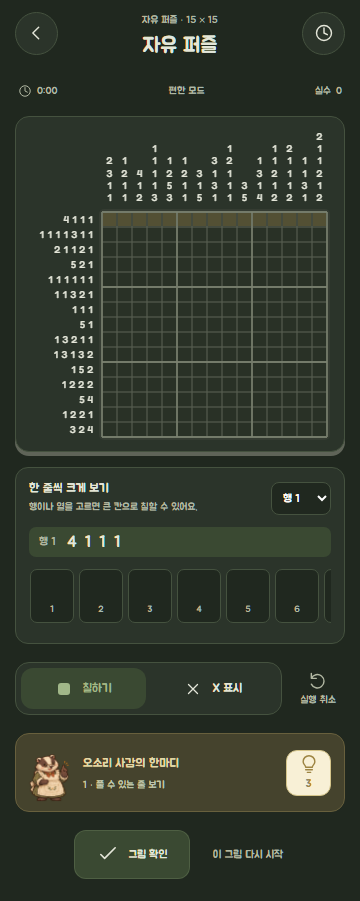

iPhone · iPad
iOS 출시 준비 중 · Preparing for release
출시 준비 안내 · Release information
숫자를 따라 그림 하나씩, 작은 정원을 가꿔요. 목숨 제한 없이 즐기는 논리 퍼즐이에요.
A little picture, a growing garden. Logic puzzles without lives or energy limits.
iOS 출시 준비 중 · Preparing for release
출시 준비 안내 · Release information출시 대기 · Release pending
테스트 상태 · Test status쉿! 숲속 정원: 노노그램
숫자를 따라 칸을 칠하면 작은 그림이 완성되고, 숲속 하숙집 뒤뜰의 정원이 자라나요. 추측 없이 논리로 풀고, 원하는 속도로 쉬어 가세요.


정원·도감의 추가 화면은 준비 중이에요.
iOS 출시 준비 중
아직 다운로드 링크가 제공되지 않아요. 정식 출시 후 이곳에서 안내할게요.
출시 후 현지가격은 스토어의 표시와 구매 확인 화면에서 확인해 주세요.
iOS는 판매 가능한 전 세계에서 중국 본토를 제외하고 출시할 예정이에요. 실제 이용 가능 여부는 해당 지역 App Store에서 확인해 주세요.
출시 대기
Android용은 준비 중이며 아직 테스트 참여나 설치 링크를 제공하지 않아요.
테스트 상태 확인현재 공개 테스트를 모집하지 않아요. 참여가 열리면 이곳에 정확한 안내를 추가할게요.
사용 방법과 자주 묻는 질문은 고객 지원에서 확인하세요. 오류나 문의는 지원 메일로 보내 주세요.
Tuckaway Garden: Nonogram
Follow the numbers to reveal little pictures and grow the garden behind the forest boarding house. Solve with logic, without guessing, and take a break whenever you like.
More garden and collection screens are being prepared.
Preparing for iOS release
A download link is not available yet. Release information will appear here when the app is available.
After release, check your store’s localized price and purchase confirmation.
iOS is planned for all available countries and regions except mainland China. Check your regional App Store for availability after release.
Release pending
The Android version is being prepared. Test signup and installation links are not available yet.
Check test statusPublic testing is not open. Instructions will be added here when participation becomes available.
Visit support for instructions and frequently asked questions. Email us about a bug or anything you need help with.
しーっ！森のおにわ：ノノグラム
数字に合わせてマスをぬると小さな絵が現れ、森の下宿の裏庭が育ちます。推測に頼らず論理で解いて、好きなときにひとやすみ。
おにわや図鑑の追加画面は準備中です。
iOSリリース準備中
ダウンロードリンクはまだありません。公開後にこちらでご案内します。
公開後の現地価格は、ストアと購入確認画面でご確認ください。
iOSは販売可能な全世界から中国本土を除いて公開予定です。公開後の提供状況は、お住まいの地域のApp Storeでご確認ください。
リリース待ち
Android版は準備中です。テスト参加やインストール用のリンクはまだありません。
テスト状況を見る公開テストの募集は行っていません。参加できるようになった際に、こちらへご案内を追加します。
噓！森林小花園：數織
依數字塗滿格子，讓小圖案浮現，照顧森林旅舍後院的花園。靠邏輯解題，不必猜測，想休息就休息。
更多花園與圖鑑畫面準備中。
iOS發行準備中
目前尚無下載連結，正式推出後將在此提供資訊。
正式推出後，請確認商店顯示的當地價格與購買確認畫面。
iOS預計於可販售的全球國家與地區推出，中國大陸除外。正式推出後，請在所在地區的App Store確認供應情況。
等待發行
Android版準備中，目前尚未提供測試參加或安裝連結。
查看測試狀態目前未開放公開測試招募，開放參加時將在此補上正確說明。